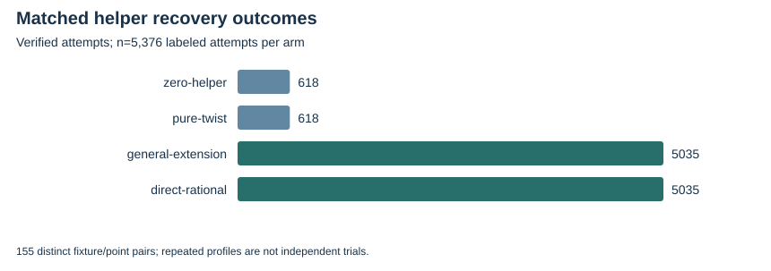

TWIST ROUTES 1–3 · E23 · 2026-10-23 · LOCAL BOUNDED EVIDENCE
The corrected panel evaluates 336 profiles and 5376 labeled target/profile attempts, on 155 distinct fixture/point pairs. Fresh source-group replay checks 20976 unique arm witnesses, including every raw and eliminated equation and each recovered scalar.
Zero-helper and pure-twist arms have identical rows and recovery outcomes. General extension helpers and matched rational helpers also agree exactly. Adding rational helper projections can improve recovery within these toy panels; representing them as extension points adds no independent row information.
V1 witness filenames omitted arity and allowed cross-profile overwrites. All v1 outputs remain incomplete evidence. V2 uses the full profile hash and has a clean replay. Two earlier assessment attempts retain the caught checksum defect and a memory-cap failure; the final checker streams witnesses under the same cap.
| Arm | Verified recovery attempts | Attempt population |
|---|---|---|
| zero-helper | 618 | 5376 |
| pure-twist | 618 | 5376 |
| general-extension | 5035 | 5376 |
| direct-rational | 5035 | 5376 |

Complete helper construction/index/projection/elimination costs and a calibrated one-target comparison remain missing. Equal projected rows alone do not prove every extension representation has equal computational cost.
Verified locally on the same host; complete raw publication is pending artifact-store access. No calibrated speedup, novelty, independent-host replay or NIST DLP is claimed. Original acceptance criteria remain open.
Rust 1.90.0, PARI/GP 2.17.2, one worker except the three-cell E25 orchestration; isolation L0. Caps and limits are in each source-frozen protocol and receipt. Counts are exact finite records; no wall time is admitted. Stochastic uncertainty is not inferred from repeated configurations or targets.
| Receipt / phase | UTC start | Exit | Source pin |
|---|---|---|---|
| partial-20261023-v1.json | 2026-10-23T02:25:02Z | 0 | b7230ada8ac7 |
| partial-20261023-v2.json | 2026-10-23T17:00:43Z | 0 | ba7ea81a033c |
Native assessment: ../../execution-v2/assessment-20261023-v3/ASSESSMENT.json. Raw members: runs/partial-20261023-v1 and -v2; assessment-20261023-v1, -v2, -v3. Source/input/binary hashes and exact argv: E23-receipts.json and ../../execution-v2/receipts/.